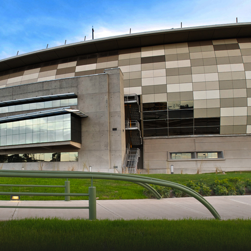

Mendoza 2015
23 24 25 Enero
Si sos programador, diseñador, músico, ilustrador, o tenés algún otro conocimiento relacionado al arte y la tecnología, ¡podés participar del mayor evento de desarrollo de juegos del mundo!


Es un evento gratuito y multidisciplinario donde vas a tener la posibilidad de crear un juego en 48 horas.
Imaginate una hackathon centrada en el desarrollo de juegos de mesa o de video, simultánea en más de 480 sedes en 63 países, y con 48 horas para terminar tu proyecto con gente que tiene el mismo gusto por la creatividad y los juegos que vos. Eso es la Global Game Jam.
En Argentina se realiza en Buenos Aires, La Plata, Mar del Plata, Santa Fe, Tucumán, Córdoba y aquí en Mendoza, que tendrá sede por cuarto año consecutivo, esta vez en el Espacio Julio Le Parc.
La dinámica es la siguiente:
- Traé tus herramientas, ya sea netbook, notebook, pc, tableta digital, papel, lápiz, o lo que sea en que trabajes. También algo de plata para comer.
- El primer día se libera a todo el mundo desde la sede central la consigna para desarrollar el juego. La idea es que los juegos se creen de cero a partir de esta consigna, por eso no tiene sentido llevar juegos a medio terminar. Aunque si querés, podés traer códigos, personajes o músicas creadas por vos.
- Se arman grupos para generar propuestas de juegos.
- Se escogen las mejores y te sumás a la idea que más te guste para ponerte en seguida a hacer lo que mejor sabes hacer.
No hay ganadores. La idea es que vengas a conocer gente, trabajar en equipo y aportar todo lo que sepas.
Se realizará en el Espacio Julio Le Parc.
Ubicado en Mitre y Godoy Cruz, San José, Guaymallén.
¿Cómo llegar?
Grupo 2
- Línea B21 Rodeo de la Cruz por Godoy Cruz
- Línea B22 Corralitos por Godoy Cruz
- Línea B23 Santa Ana por Godoy Cruz
- Línea B24 Primavera por Godoy Cruz
- Línea B25 Buena Nueva por Godoy Cruz
- Línea B26 Paraguay
- Línea B27 Colonia Segovia
- Línea B27 Escorihuela por Godoy Cruz
Grupo 5
- Línea 72 San Ignacio - Terminal por Colón
- Línea 72 San Ignacio por Colón
- Línea 71 Guaymallén - Godoy Cruz por O'Brian
- Línea 71 Guaymallén - Godoy Cruz por Terminal
Grupo 10
- Línea 171-173 Maipú por Rodeo de la Cruz
- Línea 173-171 Maipú - Rodríguez Peña - Rodeo de la Cruz
- Línea 173-172 Maipú - Ortega - Rodeo de la Cruz
- Línea 171 Maipú - V. Viñedo - Rodeo de la Cruz
Trole
- Trole Línea Villa Nueva

Los días 23, 24 y 25 de Enero
La sede Mendoza tiene estos horarios:
- Viernes 23 de 17 a 20hs
- Sábado 24 de 9 a 20hs
- Domingo 25 de 9 a 20hs